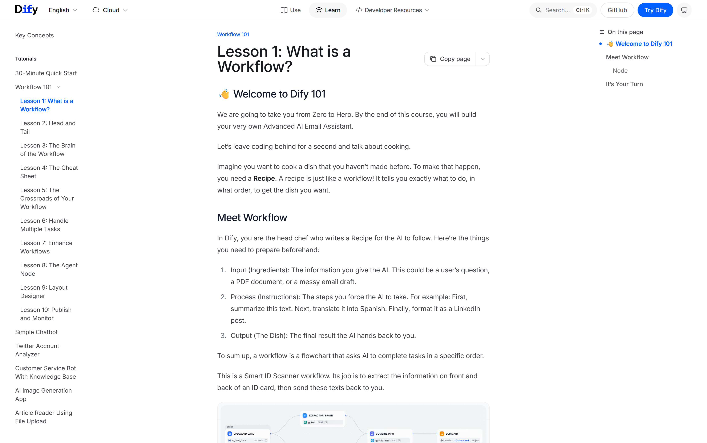
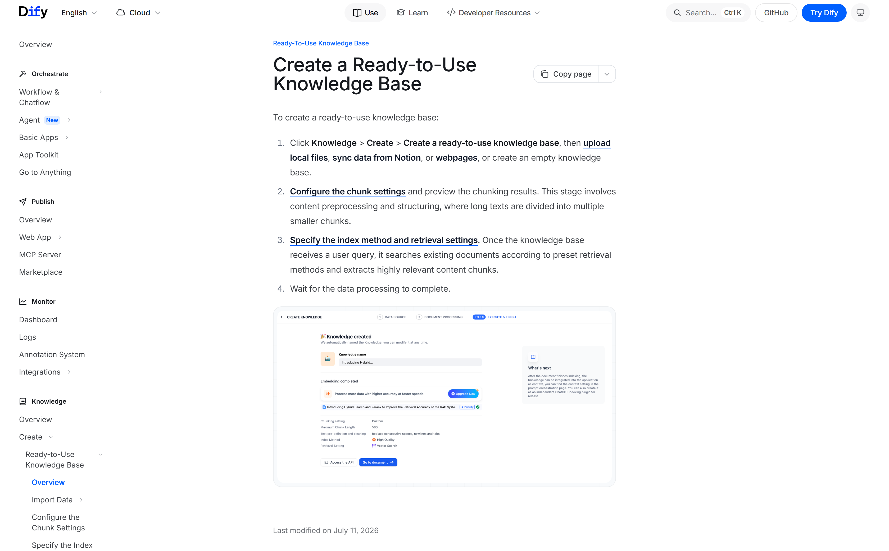
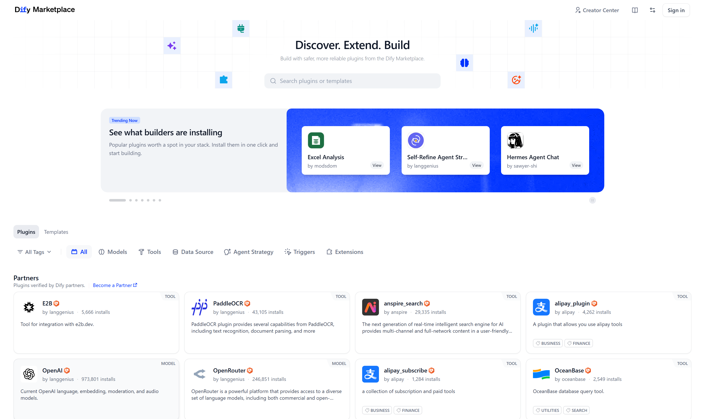

OSS PROJECT INTRO · DIFY 系列第 3 期：核心概念与整体架构
上一期跑起来了 Dify，这期拆开看里面。五个概念撑起全部认知：五种应用类型（聊天助手、文本生成、Agent、Chatflow、工作流）是入口选择；编排引擎把画布存成图、按图执行、用变量池传数据；RAG 管线把"入库四道工序、查询三步"讲成一条流水线；模型供应商抽象靠插件体系做到换模型不改应用；插件生态用六类插件把平台能力摊开。最后一张源码地图，为第 4 期读码铺路。
Dify 工作台里建应用，官方分五种类型。选型口诀先记住一句：先问任务是"多轮对话"还是"单次执行"，再问要不要模型自主决策。
| 类型 | 形态 | 适合场景 |
|---|---|---|
| 聊天助手 Chatbot | 提示词驱动的对话，可挂知识库与工具 | 日常问答、客服、助手的默认首选 |
| 文本生成 Text Generator | 单次提示词出结构化文本 | 摘要、翻译、改写、文案批量生产 |
| Agent 智能体 | 模型自主推理并调用工具，多步完成任务 | 步骤无法预先写死的开放任务 |
| Chatflow 聊天流 | 多轮对话画成流程图，分支可控 | 流程复杂、要精确控制的多轮对话 |
| Workflow 工作流 | 单次执行的自动化流水线 | 批处理、文档抽取、RAG 应用编排 |
两个易混点：Chatflow 与聊天助手的差别在控制粒度——前者每个环节都是画布上的节点，分支、循环、人审都可控；Agent 与工作流的差别在决策权——Agent 让模型自己决定下一步，工作流的每一步都是你编排好的。API 侧五种类型对应不同接口模式（chat、completion、agent、advanced-chat、workflow），发布后按类型调用。
来源注记——docs.dify.ai 应用构建章节与 API Reference（2026-09-30 核对）：五种类型与 API 模式（chat / agent-chat / completion / advanced-chat / workflow / agent）以官方口径为准。
画布背后是一个图执行引擎，三句话心智模型：画布上存的是一张有向图——节点加连线就是执行顺序；运行时按图推进——逐节点执行、流式输出、分支与循环都由图结构表达；数据不在节点里，在变量池——系统变量、环境变量、各节点输出统一入池，下游节点按名字引用。还有个容易被忽略的能力：人审节点，流程跑到关键处可以停下来收表单，人确认后继续——自动化与人工把关在同一条流水线里共存。

来源注记——仓库 api/core/workflow 目录（main，2026-09-30 核对）：workflow_entry.py 执行入口、graph_topology.py 图拓扑、node_factory.py 与 node_runtime.py 节点抽象、variable_pool_initializer.py 变量池、human_input_adapter.py 等人审模块——概念与源码一一对应。
| 节点 | 职责 | 什么时候用 |
|---|---|---|
| LLM | 调用大模型生成、总结、判断 | 一切要"动脑子"的环节 |
| 知识检索 | 从知识库召回相关分段 | RAG 应用标配 |
| 条件分支 | 按变量值走不同路径 | 一切 if-else 逻辑 |
| 迭代 | 对数组逐项执行子流程 | 批量文档、多条结果处理 |
| 模板转换 | 变量拼装成文本 | 组织上下文与输出格式 |
| HTTP 请求 | 调用外部接口 | 接业务系统与第三方服务 |
| 代码执行 | 沙箱内跑 Python | 格式转换与自定义逻辑 |
节点设计的值得学的一点：每个节点只做一件事，数据交换全部走变量池——这与 Unix "一个工具干一件事" 的哲学同源，也是画布能自由组合的原因。第 4 期读码会看到，每种节点在源码里就是一个独立模块，由节点工厂统一实例化。
把 RAG 拆成两段看，调优就有了抓手：入库段决定"知识长什么样"——抽取清洗把各种格式变纯文本，分段按长度切块、留重叠防截断，嵌入把每段变向量写进索引库；查询段决定"回答靠什么"——召回捞回候选分段，重排挑出最相关的几段，拼进上下文交给模型作答并附引用。回答不对，先分清是入库段切坏了，还是查询段捞歪了——这句口诀值回本期票价。
| 策略 | 怎么召回 | 适合 |
|---|---|---|
| 向量检索 | 语义相似度找分段 | 问法与原文说法不一致也能命中 |
| 全文检索 | 关键词匹配 | 术语、型号、编号等精确词 |
| 混合检索 + 重排 | 两路候选合并，重排模型精选 | 生产环境默认推荐，精度最稳 |
| 父子分段 | 子段做检索命中，父段整体作答 | 长文档要完整上下文 |
语义检索与关键词检索是一对互补：向量检索懂意思但会漏精确词，全文检索认字面但不懂同义改写，混合检索把两路候选合并后交重排模型精选，是官方推荐的生产默认。另有元数据过滤——按文档属性先筛后检索，多部门知识库隔离场景很好用。这些开关都在知识库设置里，改完用召回测试验证，正是上一期说过的闭环。
来源注记——docs.dify.ai 知识库章节（2026-09-30 核对）：Hybrid Search and Rerank、Parent-child Retrieval、Metadata Filtering 均为官方功能口径。

Dify 最值钱的抽象在这一层：应用只认统一接口——生成、嵌入、重排、语音各有各的接口契约，模型差异全部被插件吸收。架构上三层接力：应用层发出统一调用 → 模型抽象层按接口契约转发 → plugin_daemon 插件守护进程分发给具体供应商插件——云端闭源（OpenAI、Anthropic 等）、本地开源（Ollama、Xinference 等）、自建网关（OpenAI 兼容接口）一律即插即用。换模型 = 市场里装插件 + 设置里点一下，应用一行不改。配套还有凭据池与负载均衡：同一供应商多把密钥轮着用，工作区内模型全局共享。
来源注记——docs.dify.ai 模型配置章节（2026-09-30 核对）：供应商经 Integrations 或 Marketplace 安装，模型 workspace 级共享，支持凭据池、优先级与多密钥负载均衡；Dify 1.0（2025-02）起模型与工具全面插件化。

生态健康度一眼可判：你要的能力，市场里有没有人做好了——有，装；没有，插件开发有官方脚手架，自己造一个也不难。
把第 2 期 compose 起的那支舰队按职责归拢成四层，架构讨论就有了共同语言：
顺带校准一个"旧教程坑"：2025 年 2 月的 v1.0 是条分界线，此前模型与工具是平台内置组件，此后全面改为插件架构——看到"内置模型供应商""内置工具"这类说法的老文章，思路可参考、步骤别照抄；装模型装工具一律走市场，接口细节以当前版本文档为准。
dify/ 仓库顶层（main，2026-09-30 核对）
├── api/ Python 后端（Flask + Celery，pyproject 管依赖）
│ └── core/ "发动机舱"：各引擎都在这
│ ├── workflow/ 编排引擎：图、节点、变量池、人审
│ ├── rag/ 检索管线：抽取、清洗、分段、召回、重排
│ ├── agent/ 智能体策略
│ ├── tools/ 工具运行时
│ └── plugin/ 插件体系接口
├── web/ Next.js 前端（画布在这里）
└── docker/ compose 部署全套配置第 4 期按这张地图走三站：仓库目录地图 → workflow 执行引擎 → 模型运行时抽象，边读边回扣本期的概念。读源码先读目录结构再读入口文件，api 模块入口是 app.py，Flask 应用工厂在 app_factory.py——这门手艺第 4 期现场演示。
来源注记——github.com/langgenius/dify 仓库顶层与 api/core 目录（main，2026-09-30 核对）；api 入口文件 app.py / app_factory.py / celery_entrypoint.py 见仓库 api 目录。
每题点击选项立即反馈 · 共 3 题
1. 多轮对话、流程复杂、要精确控制每个环节，选哪种应用类型？
2. 用户抱怨"回答引错了出处"，按管线口诀先查哪？
3. Dify 换模型供应商，应用侧要做的事是？
Workflow 的决策权在你手里：每一步走哪条路都是编排时定死的，运行时只是"按图施工"。它的行为是确定的——同样的输入走同样的路径，所以评测用路径覆盖思维：把分支条件枚举成用例，每个分支跑通即验收；运维看的是节点耗时、失败重试这类工程指标。Agent 的决策权在模型手里：同一个问题，模型可能先搜索再查库，也可能直接作答，路径是运行时涌现的。它的行为是概率的——评测思路必须换成结果分布思维：同一批问题跑 N 次，看成功率、步数分布、工具调用成本，而不是盯单次路径；运维要加的不是"哪个节点慢了"，而是护栏——最大步数、工具白名单、超时熔断、敏感操作人审。这组差别对架构决策的启示：任务路径能写死的绝不交给模型自主——Workflow 可预测、可回归、成本可控；只有路径真的无法预先枚举时才上 Agent，并且从一开始就按"概率系统"设计评测与护栏。把确定性流程交给图，把开放性任务交给 Agent，把两者的边界画清楚，是 LLM 应用架构里第一性的分诊动作。
先做语料画像，回答两个问题。第一，用户的问法长什么样？如果是客服、制度问答这类"口语问法对书面文档"，语义鸿沟大，向量检索收益高；如果是运维手册、合规条款这类"术语对术语"，字面精确匹配才是主战场。第二，文档里的关键信息是什么形态？型号、编号、错误码、法规条款号——这些精确 token 一旦被语义检索"意译"掉，就是致命漏召。操作流程三步：第一步，默认混合——没有反证就用混合检索加重排，两路互补是期望成本最低的起点；第二步，构造对照问题集——故意写两类极端问题，一类"换个说法问"（考验语义），一类"精确念编号"（考验字面），各十条；第三步，召回测试跑分——同一问题集在向量、全文、混合三档下各跑一遍，看命中与排序，用数据说话。两个加分项：知识库带元数据属性时加过滤条件，先按部门或产品线筛小范围再检索，精度立涨；长文档场景验证父子分段——用子段保命中精度、用父段保上下文完整。记住流程的收尾动作：每次调整分段或检索配置，召回测试必须重跑，否则你永远不知道这次"优化"伤了多少原本命中的问题。
带走这五句话：
下期预告：第 4 期《实战与源码导读》收官——企业知识库问答端到端：建知识库、调召回测试、发布 API 接入业务系统；源码读 workflow 执行引擎与模型运行时抽象。
Primary source：Dify 官方文档（docs.dify.ai）——本期应用类型、管线功能与插件口径均出自官方文档（v1.17.1，2026-09-30 核对）；源码结构见 GitHub 仓库，插件市场见 marketplace.dify.ai。